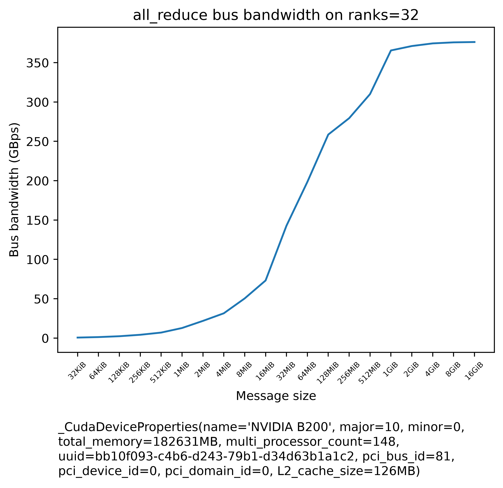
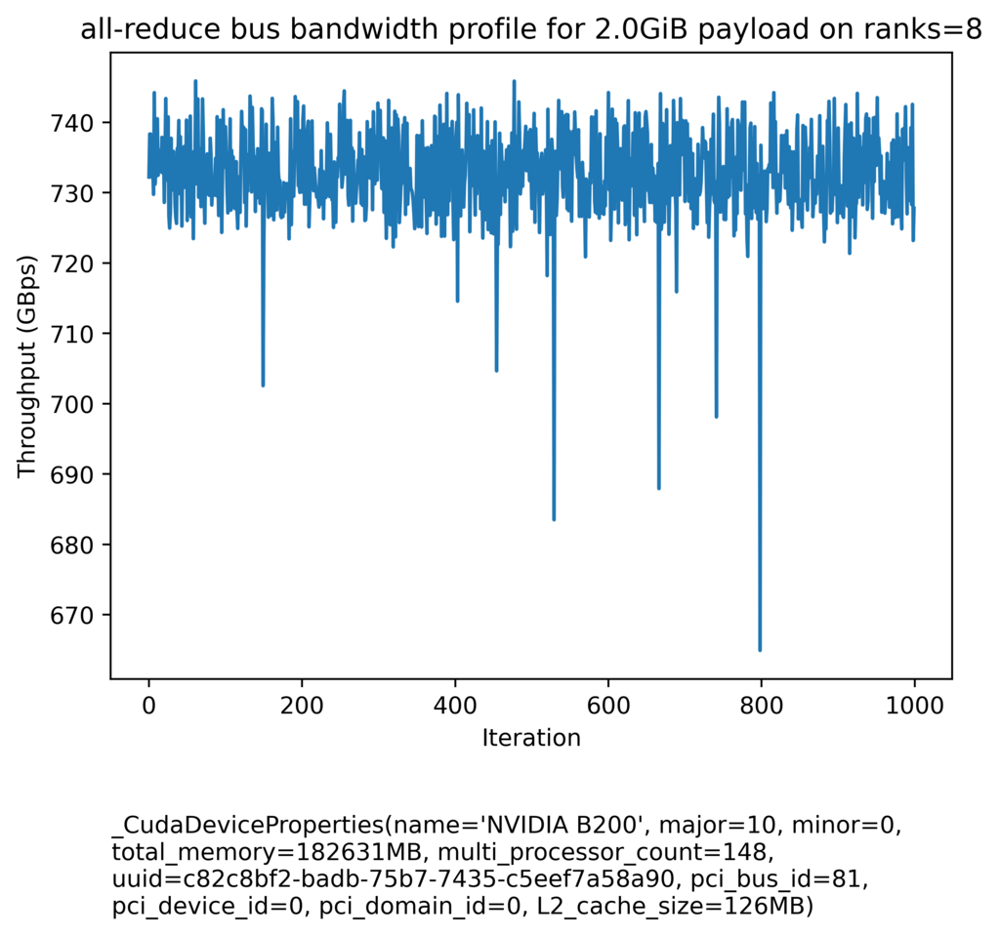
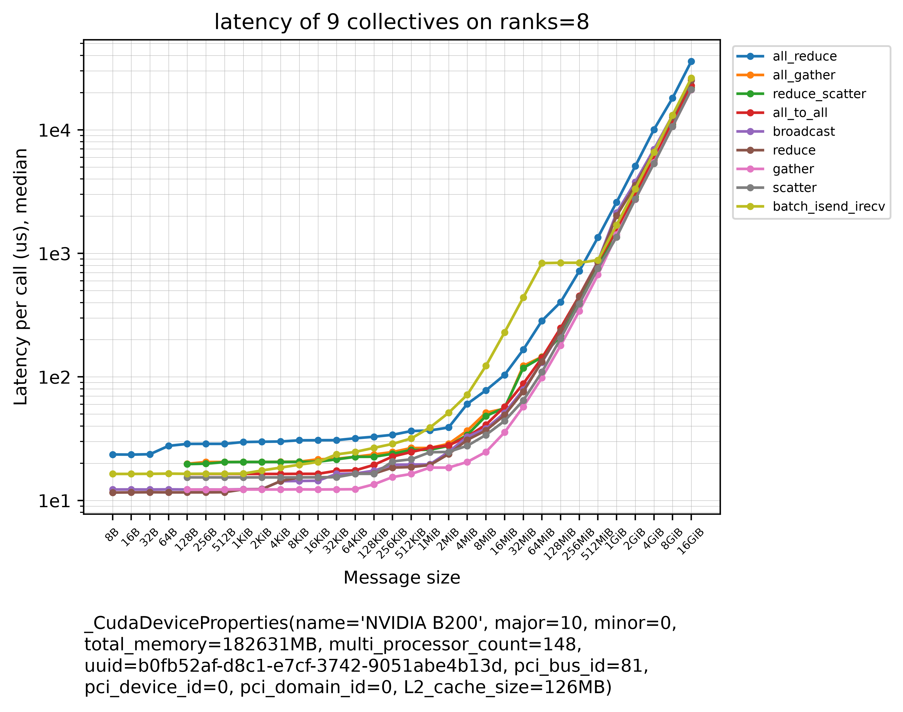

Networking Benchmarks
Tools
torch-dist-bench
torch-dist-bench.py - a tool to benchmark the real network bandwidth and latency while performing all_reduce and other collectives, over a range of payloads. This is useful for finding out what one gets in reality as compared to the advertised spec. Somewhat similar to nccl-tests, but requires just PyTorch to run. You want to use this benchmark if your application uses NCCL collectives via torch.distributed, and nccl-tests if you write CUDA NCCL kernels. This benchmark calls the collectives the way your program does: through PyTorch, which runs some of them with different NCCL calls than nccl-tests does, e.g. scatter and batch_isend_irecv - see Other collectives - and with --with-host-overhead it also includes PyTorch's per-call host overhead of some 20-30µs, which at small payloads is about as long as the collective itself.
footnote: Its previous incarnation was known as all_reduce_bench.py as it measured just the all-reduce collective.
On 4 8x B200 nodes (torch=2.14.1+cu130, cuda=13.0, nccl=2.30.7, 30 seconds for the whole sweep) it gives us:
The average bandwidth and the per-call latency of all_reduce over 32 ranks (at least 5 warmups / 20 trials, up to 10 queued calls per trial):
| payload | busbw | algbw | latency | calls |
| | | | median | p99 | mean | |
| ------: | ---------: | ---------: | --------: | --------: | --------: | ----: |
| 8B | | | 81.9us | 88.0us | 81.9us | 810 |
| 16B | | | 81.6us | 89.4us | 81.7us | 828 |
| 32B | | | 82.0us | 91.8us | 82.2us | 783 |
| 64B | | | 82.5us | 92.7us | 82.8us | 783 |
| 128B | | | 83.0us | 89.8us | 83.3us | 792 |
| 256B | | | 83.9us | 94.5us | 83.9us | 774 |
| 512B | | | 84.1us | 98.5us | 84.8us | 783 |
| 1KiB | | | 85.4us | 90.1us | 85.6us | 810 |
| 2KiB | | | 89.5us | 95.3us | 89.7us | 738 |
| 4KiB | | | 99.3us | 105.1us | 99.3us | 666 |
| 8KiB | | | 102.3us | 114.8us | 102.4us | 765 |
| 16KiB | | | 102.4us | 118.8us | 103.9us | 711 |
| 32KiB | 0.64GBps | 0.33GBps | 104.5us | 119.7us | 105.4us | 738 |
| 64KiB | 1.27GBps | 0.65GBps | 106.5us | 123.8us | 107.2us | 504 |
| 128KiB | 2.35GBps | 1.21GBps | 114.6us | 130.6us | 115.1us | 252 |
| 256KiB | 4.20GBps | 2.17GBps | 128.1us | 138.3us | 128.4us | 126 |
| 512KiB | 6.99GBps | 3.61GBps | 151.7us | 168.2us | 153.2us | 126 |
| 1MiB | 12.78GBps | 6.60GBps | 165.9us | 187.0us | 167.0us | 153 |
| 2MiB | 21.84GBps | 11.27GBps | 193.1us | 205.1us | 193.8us | 162 |
| 4MiB | 31.49GBps | 16.25GBps | 261.3us | 281.2us | 262.9us | 171 |
| 8MiB | 50.40GBps | 26.01GBps | 331.8us | 344.1us | 332.7us | 144 |
| 16MiB | 73.17GBps | 37.77GBps | 452.7us | 469.2us | 454.2us | 180 |
| 32MiB | 142.79GBps | 73.70GBps | 473.2us | 498.5us | 474.8us | 162 |
| 64MiB | 198.44GBps | 102.42GBps | 686.2us | 709.2us | 688.0us | 180 |
| 128MiB | 258.60GBps | 133.47GBps | 1027.2us | 1068.6us | 1029.2us | 140 |
| 256MiB | 279.38GBps | 144.20GBps | 1961.0us | 2112.0us | 1960.1us | 60 |
| 512MiB | 310.01GBps | 160.00GBps | 3428.2us | 3822.2us | 3452.6us | 20 |
| 1GiB | 365.47GBps | 188.63GBps | 5801.0us | 5926.7us | 5806.3us | 20 |
| 2GiB | 371.07GBps | 191.52GBps | 11307.0us | 11423.6us | 11319.9us | 20 |
| 4GiB | 374.44GBps | 193.26GBps | 22362.0us | 22451.0us | 22376.0us | 20 |
| 8GiB | 375.75GBps | 193.93GBps | 44532.8us | 44775.3us | 44549.5us | 20 |
| 16GiB | 376.17GBps | 194.15GBps | 88813.6us | 89220.5us | 88832.0us | 20 |
Read the normalized busbw column rather than algbw - PERFORMANCE.md explains why. Like nccl-tests, the benchmark measures a unidirectional bandwidth, so compare it against the advertised unidirectional peak throughput, not the bidirectional (duplex) one.
And if you have the matplotlib pip package installed, it also creates a plot:

Here is the same benchmark on a single 8x H200 node (torch=2.14.0+cu130, cuda=13.0, nccl=2.30.7, 5 warmup and 20 trial iterations per payload, 13 seconds for the whole sweep):

Note the linear y-axis compresses everything below ~100GBps into the bottom of the plot, so the small-payload end - the part that matters for gradient bucketing - is easier to read off the default column of the table in How the bandwidth is measured, measured on the same node, than off the curve. That sweep tops out at 482.35GBps, which is above the 450GBps unidirectional NVLink 4 spec rather than below it; see SHARP for why, and for what the same node measures with it disabled.
Inter-node speed depends on intra-node speed explains why a 4 node-benchmark (32 ranks) tops out at 376.17GBps when a single node (8 ranks) of the same B200s reaches 839.00GBps, and what the number means for each NIC.
For launching examples please see the top of torch-dist-bench.py. You can interrupt the benchmark with Ctrl-C, and it'll still report the results it measured up to that point.
This table should give a good sense for what scores you should expect for all-reduce collective on a well-tuned network (left is intra-node and right is inter-node):

If you're benchmarking a different collective the expected bandwidth can be very different from the above all-reduce results. This presentation also gives point-to-point communication bandwidth expectations.
To check the stability of all-reduce over time, rather than averaging the results, you can profile a single payload size with these 2 flags --profile_stability --payload_size_in_gib 0.5 (change the last value to the desired payload size in GiB). Beware that a typical ML workload doesn't call all-reduce back to back non-stop so this approach puts the network through a stress test, which is a somewhat non-typical workload. But it can still show if the network has issues with sustained load. Here is an example of a plot generated on a 8x B200 with a payload of 2GiB:

How the bandwidth is measured
By default each trial keeps the GPU busy for ~2ms, queues up to 10 back-to-back dist.all_reduce calls behind that, and divides the elapsed time by the number of calls. Payloads up to 64MiB get 10 calls, larger ones fewer, and those from 1GiB up a single call, where one call takes milliseconds anyway. This hides PyTorch's 20-30µs of host overhead per call, as it is hidden in a program whose host stays ahead of the GPU, e.g. a training loop with enough compute queued between its collectives - where the host doesn't stay ahead, such as with small collectives issued back to back or a program waiting on each result, use --with-host-overhead. The multiple calls also average out the ranks reaching the first one at slightly different times.
These bandwidth trials record a CUDA event only before the first call and after the last. The latency is measured by separate trials with an event after every call, because an event recorded between two queued calls slows them down: on an 8x B200 node a 1MiB all-reduce takes 35µs with one and 30µs without, and nccl-tests shows the same difference between its -I 1 and its default timing. Timing the bandwidth with the per-call events would cost an all-reduce 9-13% of its bandwidth from 8KiB to 2MiB there, and the other collectives up to 35%.
Here are the measurements on the same 8x H200 node as the plot above, next to nccl-tests' run built against the same NCCL version - it is what code calling NCCL API directly:
| payload | default | nccl-tests | difference |
|---|---|---|---|
| 32KiB | 3.15GBps | 3.20GBps | +2% |
| 64KiB | 6.16GBps | 6.26GBps | +2% |
| 128KiB | 12.46GBps | 12.40GBps | -0.5% |
| 256KiB | 24.68GBps | 24.63GBps | -0.2% |
| 512KiB | 48.15GBps | 48.30GBps | +0.3% |
| 1MiB | 74.57GBps | 72.45GBps | -3% |
| 2MiB | 96.26GBps | 91.48GBps | -5% |
| 4MiB | 145.14GBps | 139.97GBps | -4% |
| 8MiB | 196.56GBps | 182.03GBps | -7% |
| 16MiB | 255.90GBps | 242.45GBps | -5% |
| 32MiB | 301.25GBps | 298.44GBps | -0.9% |
| 64MiB | 368.86GBps | 369.82GBps | +0.3% |
| 128MiB | 414.54GBps | 411.21GBps | -0.8% |
| 256MiB | 441.87GBps | 442.27GBps | +0.1% |
| 512MiB | 456.23GBps | 455.82GBps | -0.1% |
| 1GiB | 465.91GBps | 464.00GBps | -0.4% |
| 2GiB | 471.06GBps | 468.31GBps | -0.6% |
| 4GiB | 474.13GBps | 473.10GBps | -0.2% |
| 8GiB | 478.24GBps | 475.16GBps | -0.6% |
| 16GiB | 482.25GBps | 480.70GBps | -0.3% |
The two agree within 2%, except from 1MiB to 16MiB, where nccl-tests reads 3-7% lower. Whether to measure with this benchmark or with nccl-tests depends on whether you are writing a PyTorch program or a NCCL kernel - see nccl-tests.
If your workload captures its all-reduce calls in a CUDA graph through PyTorch, expect lower busbw at small payloads than this benchmark's default timing reports. Replaying PyTorch-captured all-reduces on B200 left a gap of about 2.5µs between consecutive ones, which cost regular all-reduces up to 9% and symmetric memory ones 12-26% at 2MiB and below, where a call takes only 10-35µs.
Add --with-host-overhead to time one call per trial on an idle GPU instead. It charges that host overhead to every call - what an all-reduce costs when the program waits for its result before doing anything else. Its latency then also includes the ranks reaching the call at different times, as the latency of OSU's osu_allreduce does.
Neither mode times a collective that runs concurrently with compute kernels, as it does in a training loop that overlaps them. The kernels compete for the SMs and the memory bandwidth, so an overlapped collective can take longer than reported here if it can't access immediately all the SMs it needs; nccl-tests doesn't time that either.
Latency
Next to the bandwidth, the benchmark reports how long a single call takes - the median, the 99th percentile (p99) and the mean - and plots the median and the p99 against the payload size. For small payloads this is the number that matters, as they move next to nothing: on an 8x H200 node an 8B all-reduce still takes 15µs, and every payload up to 512KiB takes 15-23µs, so a faster link wouldn't help them - fewer calls or cheaper ones would. This adds up fast in inference: a model served with tensor parallelism over 8 accelerators does 2 all-reduces per layer for every generated token, and with a hidden size of 8192 in bf16 a batch of up to 32 tokens makes each a 16-512KiB all-reduce, right in that flat range - so an 80-layer model waits 160 x 15µs = 2.4ms per token on all-reduces alone, however fast its links. Training has small all-reduces too, to sync flags, scalars or loss values across ranks, and MoE pays the same toll on the all-to-all of its token routing.
And all-reduce is the best case: NCCL gives only all-reduce its tree algorithm, and NVLS can reduce it inside the switch, so other collectives can take longer at the same payload - see which collective to measure latency with, and time them with --collectives.

On B200s the latency also shows what it costs to leave the node. Here is the all-reduce latency on one 8x B200 node and on 4 of them, from the same run as the table at the top:
| payload | 8 ranks median |
8 ranks p99 |
32 ranks median |
32 ranks p99 |
32 / 8 median |
|---|---|---|---|---|---|
| 8B | 23.0µs | 25.1µs | 81.9µs | 88.0µs | 3.6x |
| 1KiB | 29.5µs | 31.8µs | 85.4µs | 90.1µs | 2.9x |
| 16KiB | 30.7µs | 32.8µs | 102.4µs | 118.8µs | 3.3x |
| 128KiB | 32.8µs | 34.8µs | 114.6µs | 130.6µs | 3.5x |
| 512KiB | 35.8µs | 38.0µs | 151.7µs | 168.2µs | 4.2x |
| 1MiB | 35.9µs | 39.8µs | 165.9µs | 187.0µs | 4.6x |
| 4MiB | 60.4µs | 62.6µs | 261.3µs | 281.2µs | 4.3x |
| 16MiB | 104.4µs | 107.2µs | 452.7µs | 469.2µs | 4.3x |
Up to 16MiB a call takes 2.9-4.6 times as long once it crosses the network, and even an 8B all-reduce takes 82µs instead of 23µs.
How the latency is measured
- Each call's time is the time from the end of the previous queued call to its own end, as in
nccl-tests' per-iteration timing (-I 1), which it reports in itsi_*columns, and as the median in its-JJSON output. The first call of a trial is left out, and a 1-element all-reduce after the busy wait lines the ranks up on the GPU before it: otherwise a rank whose busy wait ends first spends the difference waiting in its first calls - in one call for most collectives, but in up to ranks-1 calls forbatch_isend_irecv, whose ring passes the wait on one rank per call. - A call isn't done until it's done on every rank, so each call's time is that of its slowest rank, as in
nccl-tests' per-iteration median and p99. Itstimecolumn is instead each rank's time per call averaged over the ranks, which is close for an all-reduce, whose ranks finish together, but lower for collectives whose ranks don't, such asbroadcast. - Small payloads get up to 1000 calls each, so that the p99 is the 10th slowest of them, and larger payloads fewer, once 1000 calls would move more than 40MiB - Intel MPI Benchmarks counts its repetitions the same way.
nccl-teststimes 20 calls by default and OSU'sosu_allreduce1000 up to 8KiB and 100 above. - Median and p99 rather than the mean, because one slow call moves the mean but not the median, and the p99 shows how slow the slow calls get. The mean is printed too.
- A rank's Python thread occasionally pauses for a few milliseconds. When that happens while it queues a trial's calls, its GPU runs out of queued work before the 2ms busy wait is over, and the trial times the pause rather than the all-reduce. Such trials are left out on all ranks, and the report says how many: on the 8x H200 node it was 50-60 of 1904 trials per run. Without this, the p99 at small payloads read anywhere from 19µs to 380µs and changed from run to run.
On the same 8x H200 node (torch=2.14.0+cu130, nccl=2.30.7), compared with nccl-tests timing 1000 calls per payload one by one (-n 1000 -w 200 -I 1, in-place):
| payload | median | p99 | sym-mem median |
sym-mem p99 |
host overhead median |
host overhead p99 |
nccl-teststime |
nccl-tests p99 |
|---|---|---|---|---|---|---|---|---|
| 8B | 15.2µs | 16.1µs | 8.1µs | 9.0µs | 36.6µs | 3668µs | 14.9µs | 16.1µs |
| 64B | 17.9µs | 19.0µs | 8.1µs | 9.2µs | 38.0µs | 5166µs | 17.0µs | 19.0µs |
| 1KiB | 18.8µs | 19.8µs | 8.4µs | 9.3µs | 39.1µs | 5213µs | 18.2µs | 19.7µs |
| 32KiB | 20.9µs | 21.7µs | 11.6µs | 12.4µs | 41.7µs | 4877µs | 20.4µs | 21.6µs |
| 256KiB | 21.4µs | 21.9µs | 12.6µs | 13.8µs | 43.5µs | 3607µs | 21.0µs | 21.7µs |
| 1MiB | 27.7µs | 28.5µs | 16.3µs | 17.2µs | 50.9µs | 75µs | 27.8µs | 28.6µs |
sym-mem: run with --sym-mem; host overhead: run with --with-host-overhead.
The default timing agrees with nccl-tests within 1µs at the p99, and symmetric memory roughly halves the latency up to 16KiB. On an 8x B200 node with the same software the two agreed within 1µs as well - an 8B all-reduce took 23.5µs at the median and 24.7µs at the p99, and 11.6µs and 12.5µs with --sym-mem - so a small all-reduce costs more there than on the H200 node. --with-host-overhead keeps the trials in which a host paused, as that's what a program that waits on each all-reduce gets: its median adds the ~20µs of PyTorch's per-call overhead, and its p99 up to 256KiB is 3.6-5.2ms, because more than 1 call in 100 waited for some rank's paused host.
The report also names the smallest payload that reaches half the peak busbw - 16MiB or 32MiB on the 8x H200 node above, as 16MiB sits right at the half. Payloads below it get less than half the bandwidth the setup can give, and are better judged by their latency.
By default the latency is measured from 8B to 16GiB and the bandwidth from 32KiB to 16GiB, since below 32KiB a call's time is nearly all latency, so its busbw says little. --min-payload moves where the latency range starts, --min-busbw-payload where the bandwidth range starts, and --max-payload where both end - e.g. --max-payload 16K for a quick latency-only run.
Other collectives
The benchmark times all_reduce by default. To time other collectives, add --collectives with one or more of their names, comma separated, e.g. --collectives all_gather,reduce_scatter or all for all nine of them - all_reduce, all_gather, reduce_scatter, all_to_all, broadcast, reduce, gather, scatter and batch_isend_irecv. Examples:
python -u -m torch.distributed.run --nproc_per_node=8 torch-dist-bench.py --collectives all_gather,reduce_scatter
python -u -m torch.distributed.run --nproc_per_node=8 torch-dist-bench.py --collectives all
Each collective gets the same timing and plots as all_reduce, saved as busbw-mean-<collective>-<host>-<ranks>.png and latency-<collective>-<host>-<ranks>.png. When more than one is benchmarked, a busbw table and a latency-median table follow, payloads down the rows and collectives across - add --separate-tables for a table each with algbw and the latency's p99 and mean as well - and a summary table and two plots comparing them follow, saved as busbw-mean-collectives-<host>-<ranks>.png and latency-collectives-<host>-<ranks>.png. All nine from 8B to 16GiB take under 2 minutes on one 8x B200 node.
The payload, algbw and busbw follow nccl-tests, whose PERFORMANCE.md explains them. The payload is the larger of a rank's input and output buffers, and busbw is algbw multiplied by a factor that makes it comparable across collectives and numbers of ranks n:
| collective | a rank's input | a rank's output | busbwfactor |
|---|---|---|---|
all_reduce |
the payload | the payload | 2(n-1)/n |
all_gather |
1/n of the payload | the payload | (n-1)/n |
reduce_scatter |
the payload | 1/n of the payload | (n-1)/n |
all_to_all |
the payload, 1/n per rank | the payload, 1/n from each rank | (n-1)/n |
broadcast |
the payload, on the root | the payload | 1 |
reduce |
the payload | the payload, on the root | 1 |
gather |
1/n of the payload | the payload, on the root | (n-1)/n |
scatter |
the payload, on the root | 1/n of the payload | (n-1)/n |
batch_isend_irecv |
the payload, to rank+1 | the payload, from rank-1 | 1 |
The root is rank 0, and batch_isend_irecv has each rank send to the next rank and receive from the previous one, as nccl-tests does. The send and the receive are issued together as one batch: unbatched, they'd run one after the other on the same stream, and each rank's send would wait on its neighbour's receive, which is queued behind that neighbour's own send.
As in nccl-tests, the 1/n pieces are rounded down to a multiple of 16 bytes, so payloads with less than 16 bytes per rank are skipped - those below 128B on 8 ranks - and with a number of ranks that isn't a power of 2, all_gather, gather, reduce_scatter, scatter and all_to_all move a little less than the payload, and the table reports what they did move.
Here are all nine on an 8x B200 node (torch=2.14.1+cu130, nccl=2.30.7, 2 minutes for the whole sweep), as the benchmark prints them - the busbw and the latency median of each collective at every payload, then the summary:
The average bandwidth and the per-call latency of 9 collectives over 8 ranks (at least 5 warmups / 20 trials, up to 10 queued calls per trial):
busbw, GBps
| pay | all_ | all_ | reduce_ | all_to | broad | reduce | gather | scatter | batch |
| load | reduce | gather | scatter | _all | cast | | | | _isend |
| | | | | | | | | | _irecv |
| -----: | -----: | -----: | ------: | -----: | -----: | -----: | -----: | ------: | -----: |
| 32KiB | 2.17 | 1.64 | 1.70 | 2.45 | 2.78 | 2.97 | 3.68 | 2.67 | 2.34 |
| 64KiB | 4.18 | 3.12 | 3.22 | 4.59 | 5.28 | 5.24 | 6.84 | 4.97 | 4.22 |
| 128KiB | 8.13 | 6.12 | 6.29 | 8.33 | 10.40 | 10.40 | 13.04 | 9.92 | 7.69 |
| 256KiB | 15.91 | 11.90 | 12.31 | 13.11 | 19.00 | 20.45 | 20.78 | 14.58 | 15.11 |
| 512KiB | 29.50 | 21.65 | 22.25 | 23.85 | 36.08 | 36.36 | 37.16 | 27.18 | 25.00 |
| 1MiB | 58.93 | 43.53 | 44.73 | 42.67 | 71.98 | 72.89 | 65.03 | 48.68 | 38.80 |
| 2MiB | 106.27 | 76.21 | 80.68 | 82.44 | 108.21 | 112.18 | 129.13 | 92.42 | 54.07 |
| 4MiB | 131.71 | 116.90 | 126.13 | 137.51 | 143.11 | 151.16 | 232.74 | 164.62 | 69.05 |
| 8MiB | 201.12 | 156.61 | 169.33 | 209.13 | 225.24 | 237.76 | 354.29 | 259.37 | 77.06 |
| 16MiB | 296.16 | 294.05 | 285.91 | 284.06 | 315.35 | 329.76 | 469.87 | 372.69 | 81.14 |
| 32MiB | 364.90 | 252.67 | 264.12 | 360.63 | 385.89 | 402.28 | 556.43 | 494.93 | 83.57 |
| 64MiB | 421.74 | 418.71 | 419.83 | 434.48 | 474.91 | 486.08 | 630.14 | 572.21 | 84.83 |
| 128MiB | 591.12 | 556.63 | 560.30 | 491.21 | 537.97 | 550.18 | 668.70 | 595.42 | 167.76 |
| 256MiB | 659.60 | 582.00 | 591.78 | 531.85 | 557.36 | 570.34 | 692.03 | 632.65 | 332.74 |
| 512MiB | 703.05 | 597.64 | 612.24 | 555.99 | 561.76 | 582.73 | 702.41 | 667.78 | 624.07 |
| 1GiB | 726.53 | 609.48 | 624.93 | 606.00 | 560.04 | 589.18 | 763.36 | 706.41 | 640.10 |
| 2GiB | 741.30 | 629.10 | 656.15 | 608.20 | 602.80 | 638.31 | 711.24 | 700.79 | 649.89 |
| 4GiB | 749.77 | 644.07 | 676.61 | 645.36 | 637.73 | 667.94 | 713.73 | 712.37 | 654.43 |
| 8GiB | 833.39 | 655.67 | 685.19 | 654.13 | 664.05 | 686.42 | 716.57 | 715.36 | 657.03 |
| 16GiB | 840.18 | 661.74 | 689.72 | 658.62 | 674.19 | 688.60 | 718.37 | 717.23 | 658.47 |
latency median, us
| pay | all_ | all_ | reduce_ | all_to | broad | reduce | gather | scatter | batch |
| load | reduce | gather | scatter | _all | cast | | | | _isend |
| | | | | | | | | | _irecv |
| -----: | ------: | ------: | ------: | ------: | ------: | ------: | ------: | ------: | ------: |
| 8B | 23.6 | | | | 12.3 | 11.6 | | | 16.4 |
| 16B | 23.5 | | | | 12.3 | 11.6 | | | 16.4 |
| 32B | 23.6 | | | | 12.3 | 11.6 | | | 16.4 |
| 64B | 27.6 | | | | 12.3 | 11.6 | | | 16.5 |
| 128B | 28.7 | 19.8 | 19.7 | 16.4 | 12.3 | 11.6 | 12.3 | 15.4 | 16.4 |
| 256B | 28.7 | 20.4 | 19.8 | 16.4 | 12.3 | 11.6 | 12.2 | 15.4 | 16.4 |
| 512B | 28.7 | 20.5 | 20.4 | 16.4 | 12.3 | 11.6 | 12.3 | 15.4 | 16.4 |
| 1KiB | 29.7 | 20.5 | 20.5 | 16.4 | 12.3 | 12.3 | 12.3 | 15.4 | 16.5 |
| 2KiB | 29.9 | 20.5 | 20.5 | 16.4 | 12.4 | 12.3 | 12.3 | 15.4 | 17.5 |
| 4KiB | 30.0 | 20.5 | 20.5 | 16.4 | 14.3 | 14.3 | 12.3 | 15.4 | 18.4 |
| 8KiB | 30.7 | 20.6 | 20.5 | 16.4 | 14.4 | 15.4 | 12.3 | 15.4 | 19.5 |
| 16KiB | 30.7 | 21.5 | 20.6 | 16.4 | 14.4 | 15.4 | 12.3 | 15.4 | 20.5 |
| 32KiB | 30.8 | 21.8 | 21.5 | 17.4 | 16.4 | 15.5 | 12.3 | 15.4 | 23.6 |
| 64KiB | 31.8 | 22.6 | 22.5 | 17.5 | 16.5 | 16.5 | 12.3 | 16.4 | 24.7 |
| 128KiB | 32.8 | 23.6 | 22.6 | 19.4 | 17.4 | 16.5 | 13.5 | 16.4 | 26.6 |
| 256KiB | 34.0 | 24.6 | 23.8 | 22.7 | 19.4 | 18.4 | 15.5 | 20.7 | 28.7 |
| 512KiB | 36.4 | 26.6 | 25.6 | 24.6 | 19.5 | 18.6 | 16.4 | 21.5 | 31.7 |
| 1MiB | 36.8 | 26.6 | 25.7 | 26.7 | 19.6 | 19.3 | 18.4 | 24.5 | 38.9 |
| 2MiB | 38.9 | 28.7 | 27.6 | 27.9 | 24.7 | 23.7 | 18.4 | 24.7 | 51.2 |
| 4MiB | 60.4 | 36.8 | 33.9 | 32.8 | 32.8 | 30.9 | 20.5 | 27.7 | 71.7 |
| 8MiB | 77.8 | 51.3 | 48.2 | 41.0 | 38.1 | 36.8 | 24.7 | 33.9 | 122.8 |
| 16MiB | 103.8 | 55.3 | 56.3 | 57.3 | 51.1 | 49.0 | 35.6 | 44.0 | 229.4 |
| 32MiB | 166.0 | 122.9 | 118.1 | 88.1 | 78.8 | 75.9 | 57.3 | 64.5 | 438.4 |
| 64MiB | 284.7 | 145.4 | 144.4 | 142.4 | 131.1 | 133.1 | 98.3 | 109.6 | 833.8 |
| 128MiB | 402.8 | 216.1 | 215.1 | 248.9 | 233.5 | 235.6 | 179.3 | 204.8 | 838.9 |
| 256MiB | 718.9 | 408.6 | 404.5 | 451.6 | 441.4 | 446.3 | 341.6 | 390.1 | 839.4 |
| 512MiB | 1345.5 | 795.5 | 775.2 | 859.1 | 860.9 | 845.6 | 671.1 | 754.7 | 880.6 |
| 1GiB | 2595.8 | 1549.3 | 1518.6 | 1555.9 | 2128.8 | 2016.3 | 1415.2 | 1353.7 | 1694.2 |
| 2GiB | 5081.1 | 2999.3 | 2879.5 | 3098.6 | 3775.5 | 3555.3 | 2725.9 | 2750.5 | 3325.9 |
| 4GiB | 10052.6 | 5853.7 | 5572.6 | 5836.8 | 6942.7 | 6619.1 | 5432.3 | 5336.1 | 6597.6 |
| 8GiB | 18091.5 | 11482.1 | 11005.9 | 11518.0 | 13140.5 | 12708.4 | 10652.7 | 10623.0 | 13150.2 |
| 16GiB | 35853.3 | 22769.6 | 21846.0 | 22860.8 | 25700.9 | 25147.9 | 21085.1 | 21192.7 | 26211.3 |
Summary of 9 collectives over 8 ranks:
fastest median latency
| collective | payload | fastest |
| :---------------- | ------: | ------: |
| reduce | 8B | 11.6us |
| gather | 256B | 12.2us |
| broadcast | 8B | 12.3us |
| scatter | 128B | 15.4us |
| all_to_all | 128B | 16.4us |
| batch_isend_irecv | 8B | 16.4us |
| reduce_scatter | 128B | 19.7us |
| all_gather | 128B | 19.8us |
| all_reduce | 16B | 23.5us |
busbw
| collective | payload | peak | half-peak |
| | | | payload |
| :---------------- | ------: | ---------: | --------: |
| all_reduce | 16GiB | 840.18GBps | 64MiB |
| gather | 1GiB | 763.36GBps | 16MiB |
| scatter | 16GiB | 717.23GBps | 16MiB |
| reduce_scatter | 16GiB | 689.72GBps | 64MiB |
| reduce | 16GiB | 688.60GBps | 32MiB |
| broadcast | 16GiB | 674.19GBps | 32MiB |
| all_gather | 16GiB | 661.74GBps | 64MiB |
| all_to_all | 16GiB | 658.62GBps | 32MiB |
| batch_isend_irecv | 16GiB | 658.47GBps | 256MiB |
The fastest median is the smallest latency median across the measured payloads. The half-peak payload is the smallest payload reaching half the collective's peak busbw, as in Latency.


The fastest all_to_all, which MoE dispatch and combine use, is 16.4µs, against 23.5µs for all_reduce, and the fastest reduce, gather and broadcast are 11.6µs, 12.2µs and 12.3µs. --sym-mem brings all_reduce, all_gather and reduce_scatter down to 11.6µs, moves the others' fastest payloads by less than 1µs, and makes batch_isend_irecv 1.8µs slower. At the peak, all_gather reaches 749.03GBps instead of 661.74GBps, while reduce_scatter tops out at 489.13GBps at 8GiB instead of 689.72GBps at 16GiB.
gather peaks at 763.36GBps at 1GiB, above its 718.37GBps at 16GiB. batch_isend_irecv stays at 81-85GBps from 16MiB to 64MiB, under a third of any other collective there, and its median latency is flat at 834-839µs from 64MiB to 256MiB. It catches up only from 512MiB.
Against nccl-tests built with NCCL 2.30.7 on an 8x B200 node - its per-iteration median and p99 (-I 1) for the latency, its default timing for the bandwidth - all_reduce, all_gather, reduce_scatter, all_to_all, broadcast, reduce and gather agree within about 1µs up to 1MiB and within 2% at 16GiB, and so do their p99s. Where they differ, it's because PyTorch runs the collective differently or nccl-tests times it differently:
scattertakes 3-4µs more up to 128KiB and 6-7µs more from 256KiB to 1MiB, and gets 7-24% lessbusbwfrom 8KiB to 256MiB.torch.distributed.scattersends each rank its piece with separate NCCL sends, whilenccl-testscalls NCCL's ownncclScatter, added in NCCL 2.28. Forgatherthe benchmark callstorch.distributed.gather_single, which usesncclGatherwhen PyTorch was built with NCCL>=2.28.3, and agrees withnccl-tests. The oldertorch.distributed.gather, which takes a list of output tensors and uses separate sends and receives, took 3.7µs longer at 1KiB.batch_isend_irecvtakes 2-4µs more up to 128KiB. Its send to the next rank and receive from the previous one go through PyTorch's point-to-point path rather than a single collective call. Itsbusbwagrees within 9% from 8KiB up, and within 1% from 32MiB up.broadcastandreduceget 7-15% lessbusbwfrom 4MiB to 2GiB, because back-to-backbroadcasts andreduces overlap, unlikeall_reduces, andnccl-teststimes 20 calls in a row, while this benchmark times trials of at most 10 calls, and of 1 call from 1GiB. Against a singlenccl-testscall (-n 1) its 1GiBbroadcast, at 1.89ms, is within 5%. Its latency median at 1GiB is 2.09ms, because a call's latency is the slowest rank's while the bandwidth, likenccl-tests'timecolumn, averages over the ranks, and abroadcast's ranks don't finish together.
Other implementations
Other benchmarks that measure the latency of collectives, with the payload range each one sweeps by default:
- nccl-tests - NVIDIA's benchmark of every NCCL collective through the NCCL C API;
timeis the mean per call,-I 1adds per-call min, max and p99. One 32MiB payload by default, while its README sweeps-b 8 -e 128Mon one node and-b 8 -e 8Gon 8 nodes - see nccl-tests. - rccl-tests - the same benchmark for AMD's RCCL, with the same flags and columns.
- OSU Micro-Benchmarks - the MPI benchmarks from the MVAPICH team;
osu_allreduceand its siblings report the average, min and max latency per call, 1B to 1MiB by default. - Intel MPI Benchmarks -
IMB-MPI1 Allreduceand the other collectives reportt_min,t_maxandt_avgper call, 0B to 4MiB by default. - PARAM - Meta's benchmarks, whose
train/comms/pt/comms.pytimes collectives throughtorch.distributedlike this benchmark does and reports p50, p75 and p95 latency, 8B to 64B by default. - UCC perftest -
ucc_perftesttimes collectives through UCC, which can run over NCCL, and reports the average, min and max latency; one 128-element payload by default. - MSCCL++ - its
python/mscclpp_benchmark/allreduce_bench.pytimes MSCCL++'s all-reduce kernels against NCCL's from 4KiB to 1GiB. See Other collective libraries. - DeepEP - DeepSeek's MoE expert-parallel all-to-all library, whose tests time its dispatch and combine kernels at realistic token counts rather than sweeping payload sizes. See Other collective libraries.
Symmetric memory
Symmetric memory can speed up NCCL comms significantly at lower payloads. See Symmetric memory for details.
To run the collectives on buffers registered as an NCCL symmetric memory window, add --sym-mem (similar to nccl-tests -R 2), which lets NCCL>=2.27 use its symmetric kernels for the collectives that have them. register_mem_pool(..., symm=True) arrived in torch 2.9. torch 2.9.1 (NCCL 2.27.7), 2.10.0 and 2.11.0 (both NCCL 2.28.9) hang in broadcast on that path. torch 2.12.0 with NCCL 2.29.7 is the oldest cu130 release that finishes it, so the benchmark refuses --sym-mem below torch 2.12 and NCCL 2.29. Run the benchmark with and without it to see what symmetric memory gains on your setup. Use it only if the workload you're benchmarking for runs them on symmetric memory buffers too, otherwise its numbers won't reflect what that workload will get. Other collectives shows which collectives it speeds up on a B200 node, and which it slows down.
all_gather_object vs all_reduce
all_gather_object_vs_all_reduce.py - a quick benchmark showing 23x speed up when moving from all_gather_object to all_reduce when collecting completion status from the process group. e.g. when implementing some sort of all-processes-are-done flag. This technique is usually used for synchronizing gpus when they may complete at different number of iterations - which one needs for inference over multiple DP channels, or when one wants to sync a StopIteration event in DataLoader. See also all_gather_object_vs_all_gather.py.
all_reduce latency comparison
all_reduce_latency_comp.py - exemplifies how 1x 4GB reduction is much faster than 1000x 4MB reductions.
nccl-tests
NVIDIA/nccl-tests benchmarks collectives - all-reduce, all-gather, reduce-scatter and the rest - and reports the same busbw/algbw columns as torch-dist-bench.py.
Which of the two to use depends on what you're writing. If it's a PyTorch program, use torch-dist-bench.py: it calls the collectives through torch.distributed, the way your program will, so its numbers are what your program gets - Other collectives shows where that differs from nccl-tests. If you're writing code that calls NCCL directly, such as a custom communication kernel or a C++/CUDA layer on top of NCCL, use nccl-tests, which calls the NCCL C API the same way your code will.
MPI=0 is fine for a single node, and NCCL_HOME points at whichever NCCL you want to test - the one PyTorch uses being the convenient choice, since that is what your training will actually use. pip-installed PyTorch gets it from the nvidia-nccl wheel, which as of nvidia-nccl-cu13==2.30.7 ships libnccl.so.2 but no libnccl.so, so give the linker a libnccl.so next to the headers:
git clone https://github.com/NVIDIA/nccl-tests
cd nccl-tests
NCCL_PIP=$(python -c "import nvidia.nccl; print(list(nvidia.nccl.__path__)[0])")
mkdir -p nccl-home/lib
ln -s $NCCL_PIP/include nccl-home/include
ln -s $NCCL_PIP/lib/libnccl.so.2 nccl-home/lib/libnccl.so
make -j MPI=0 NCCL_HOME=$PWD/nccl-home
export LD_LIBRARY_PATH=$NCCL_PIP/lib:$LD_LIBRARY_PATH
That puts one binary per collective under build/ - all_reduce_perf, all_gather_perf, reduce_scatter_perf, alltoall_perf and others. The LD_LIBRARY_PATH line makes them load that same NCCL at run time rather than a system one - check the NCCL version line they print. A default run times back-to-back calls, which matches torch-dist-bench.py's default timing, and -R 2 registers the buffers as a symmetric memory window, which matches torch-dist-bench.py --sym-mem.
nvbandwidth
NVIDIA/nvbandwidth measures point-to-point bandwidth between hosts and accelerators - the closest thing to a direct reading of a single link, as opposed to a collective's aggregate:
git clone https://github.com/NVIDIA/nvbandwidth
cd nvbandwidth
cmake . && make
Run it with no arguments for the full sweep, ./nvbandwidth -l to list the testcases, or -t <testcase> to run just one. -i N raises the iteration count from its default of 3.
note: host_to_device_memcpy_ce measures whatever the host-to-device path happens to be on that platform - PCIe on an x86 host with PCIe-attached accelerators, NVLink-C2C on a Grace-Blackwell system. Same command, an order of magnitude apart, so read the number against the fabric the machine actually uses.
p2pBandwidthLatencyTest
p2pBandwidthLatencyTest from CUDA samples is a low-level accelerator-to-accelerator benchmark:
git clone https://github.com/NVIDIA/cuda-samples/
cd cuda-samples/cpp/5_Domain_Specific/p2pBandwidthLatencyTest
nvcc -o p2pBandwidthLatencyTest p2pBandwidthLatencyTest.cu -I ../../../Common
note: this repository reorganized its layout - the samples used to live under Samples/ and are now under cpp/. If the cd fails, find . -name p2pBandwidthLatencyTest.cu will locate it. Common is still at the repository root, so the -I path is unchanged.
Crucial reproducibility requirements
The most important requirements for a series of successful experiments is to be able to reproduce the experiment environment again and again while changing only one or a few setup variables.
Therefore when you try to figure out whether some change will improve performance or make it worse, you must figure out how to keep things stable.
For example, you need to find a way to prevent the network usage from fluctuations. When we were doing performance optimizations for 108B pre-BLOOM experiments it was close to impossible to perform, since we were on a shared internode network and the exact same setup would yield different throughput depending on how many other users used the network. It was not working. During BLOOM-176B we were given a dedicated SLURM partition with an isolated network where the only traffic was ours. Doing the performance optimization in such environment was just perfect.
Network throughput
It's critical to understand your particular model size and framework requirements with regard to network bandwidth, throughput and latency. If you underpay for network you will end up having idle gpus and thus you wasted money and time. If you overpay for very fast network, but your gpus are slow, then again you wasted money and time.
If your network is very slow, your training is likely to be network-bound and many improvements in the training setup will not help with the improving performance.
Note: The EAI cookbook contains a set of communication benchmarks for each collective that you can use to quickly measure the throughput of your internode or intranode network.
Here is a simple all-reduce benchmark that you can use to quickly measure the throughput of your internode network:
On CSPs that have enabled SLURM Pyxis Container Plugin, such as CoreWeave, Crusoe, AWS, Oracle, Azure, GCP, etc, torch-dist-bench.py can be easily ran & reproduced via the following command:
sbatch -n <num_of_nodes> ./torch-dist-bench-pyxis.sbatch
Usually benchmarking at least 4 nodes is recommended, but, of course, if you already have access to all the nodes you will be using during the training, benchmark using all of the nodes.
If you do not have access to a pyxis SLURM environment, to run it on 4 nodes:
GPUS_PER_NODE=8
NNODES=4
MASTER_ADDR=$(scontrol show hostnames $SLURM_JOB_NODELIST | head -n 1)
MASTER_PORT=6000
python -u -m torch.distributed.run \
--nproc_per_node $GPUS_PER_NODE \
--nnodes $NNODES \
--rdzv_endpoint $MASTER_ADDR:$MASTER_PORT \
--rdzv_backend c10d \
--max_restarts 0 \
--role `hostname -s`: \
--tee 3 \
torch-dist-bench.py
Notes:
- adapt MASTER_ADDR to rank 0 hostname if it's not a SLURM environment where it's derived automatically.
Here is how to launch it in a SLURM env with 4 nodes:
salloc --partition=mypartition --nodes=4 --ntasks-per-node=1 --cpus-per-task=48 --gres=gpu:8 --time=1:00:00 bash
srun --cpus-per-task=$SLURM_CPUS_PER_TASK --gres=gpu:8 --nodes=4 --tasks-per-node=1 python -u -m torch.distributed.run --nproc_per_node=8 --nnodes 4 --rdzv_endpoint $(scontrol show hostnames $SLURM_JOB_NODELIST | head -n 1):6000 --rdzv_backend c10d torch-dist-bench.py
Notes:
- You are likely to need to adapt --cpus-per-task and --partition arguments there.
- You do salloc once and then can repeat srun multiple times on the same allocation.
You may get results anywhere between 5Gbps and 6700Gbps (as of 2026-10), and the payload size matters as much as the hardware does - busbw climbs by orders of magnitude from a small payload to a large one on the very same setup. In the measured tables under Inter-node speed depends on intra-node speed, at a 16GiB payload a single B200 node reaches 838.97GBps and four nodes 376.60GBps - about 6700Gbps and 3000Gbps - while at 32KiB those same runs report 2.17GBps and 0.64GBps. So always compare like payload with like. The minimal speed to prevent being network bound will depend on your particular training framework, but typically you'd want at least 400Gbps or higher. Though we trained BLOOM on 50Gbps.
Frameworks that shard weights and optim stages like DeepSpeed w/ ZeRO Stage-3 do a lot more traffic than frameworks like Megatron-DeepSpeed which do tensor and pipeline parallelism in addition to data parallelism. The latter ones only send activations across and thus don't need as much bandwidth. But they are much more complicated to set up and run.
Of course, an efficient framework will overlap communications and compute, so that while one stage is fetching data, the other stage in parallel runs computations. So as long as the communication overhead is smaller than compute the network requirements are satisfied and don't have to be super fantastic.
To get reasonable GPU throughput when training at scale (64+GPUs) with DeepSpeed ZeRO Stage 3 with V100s
- 100Gbps is not enough
- 200-400Gbps is ok
- 800-1000Gbps is ideal
Of course, the requirements are higher for A100 gpu nodes and even higher for H100s (but no such benchmark information has been shared yet).
Extrapolating benchmark results from several nodes to many
As it's often not easy to benchmark hundreds of nodes, often we try to benchmark interconnect performance using, say, 4 nodes. I wasn't sure whether this would give the correct indication for when 40 or 400 nodes will be used so I asked about it here and the answer was:
Extrapolating at scale is not that hard for ring and tree (we have a function in
tuning.ccpredicting it, based on the ring linear latency and the tree log latency with reduced BW). Now as you scale, there are many factors which may cause your real performance to be very far off the prediction, like routing. Also note on an IB network you'll be able to use SHARP; that way your latency stays mostly constant as you scale, your bandwidth doesn't degrade much either, and you're always better than both ring and tree.
Disable Access Control Services
PCI Access Control Services (ACS) used for IO virtualization (also known as VT-d or IOMMU) force P2P PCIe transactions to go up through the PCIe Root Complex, which does not enable GDS to bypass the CPU on paths between a network adapter or NVMe and the GPU in systems that include a PCIe switch.
For the optimal GDS performance, disable ACS by following these instructions here. Here are some additional notes
Please note that if you're using Virtual machines you can't disable ACS as it's a required feature. To run with maximum performance inside virtual machines, Address Translation Service (ATS) needs to be enabled in network adapters.
Performance-Oriented NCCL Environment Variables
While NCCL is excellent at automatically figuring out the best performance for any given network, sometimes it needs some help, in which case the following NCCL env vars are used to tune up performance. Let's look at a few common ones you might want to be aware of, and the full list of those can be found here.
Note that some NCCL_IB_* env vars apply to RoCEv2 networks as well.
NCCL_ALGO
This one defines which algorithms NCCL will use. Typically it's one of:
- Tree
- Ring
- CollnetDirect and CollnetChain (IB SHARP)
- NVLS (NVLink SHARP)
I was asking questions about how a user can do the optimization and was told at this NCCL Issue that basically the user shouldn't try to optimize anything as NCCL has a ton of smart algorithms inside that will try to automatically switch from one algorithm to another depending on a concrete situation.
Sylvain Jeaugey shared:
There used to be a static threshold, but it's been replaced by a more complex tuning system. The new system builds a model of the latency and bandwidth of each algorithm/protocol combination (that's many, many combinations) and decides which one should perform best depending on the size. So there is no longer an env var and a static value, which is good because the performance of each algorithm depends on the number of nodes and number of GPUs per node and therefore we need to navigate a 2D space of algo/protocols which isn't easy. You can always force one algorithm with
NCCL_ALGO=TREEandNCCL_ALGO=RINGand see what performance you get and whether NCCL switches at the right point. I know it's hard to understand, but it's also the best solution we found to have the best performance across all platforms and users without users having to manually tune the switch points. Downside is, if you want to manually tune things, you can't.
If you use NCCL_ALGO you need to list the algorithms to consider, but otherwise you have no control over it. So, really, this is only useful if you want to make sure that one of the algorithms isn't used.
When asking about which algorithm is better, I received:
Roughly speaking, ring is superior in terms of peak bandwidth (except on 2 nodes), tree is superior in terms of base latency (especially as we scale).
Bandwidth = Size / Time, so whether you look at the time or the bandwidth for a given size, it will be a combination of both the peak bandwidth and the base latency. For a fixed size, as you scale, the base latency of ring will become prevalent and tree will be better.
There is also an algo named NVLS, which uses NVLink SHARP to do the reduction inside the switch and can therefore report more than the wire spec - with NVLink 4.0 (450GBps) an all-reduce benchmark clocks 480GBps. NVLSTree (NCCL 2.18+) is the inter-node counterpart and requires IB or RoCE. See SHARP for when it engages, what it is worth, and why busbw stops describing the wire once it does.
And if you would like to know which algo is being used, NCCL_DEBUG=INFO combined with NCCL_DEBUG_SUBSYS=INIT,TUNING reports the selection per payload size:
NCCL_DEBUG=INFO NCCL_DEBUG_SUBSYS=INIT,TUNING NCCL_DEBUG_FILE=/tmp/nccl.%h.%p.log \
./build/all_reduce_perf -b 32k -e 16G -f 2 -g 8
grep -ihoE "AllReduce: [0-9]+ Bytes -> Algo [A-Z]+ proto [A-Z0-9]+" /tmp/nccl.*.log | sort -u
On an 8x H200 node that prints lines like AllReduce: 2097152 Bytes -> Algo NVLS proto SIMPLE, and reveals where NCCL switches over - RING with the LL protocol for payloads up to 1MiB, then NVLS with SIMPLE from 2MiB up. NCCL_DEBUG_FILE keeps all of this out of the benchmark's own output, which otherwise gets buried.
Setting NCCL_ALGO explicitly is still worth doing, but for a different purpose - measuring what each algorithm delivers on your hardware, rather than discovering which one NCCL chose.
NCCL_CROSS_NIC
The NCCL_CROSS_NIC variable controls whether NCCL should allow rings/trees to use different NICs, causing inter-node communication to use different NICs on different nodes.
To maximize inter-node communication performance when using multiple NICs, NCCL tries to communicate between same NICs between nodes, to allow for network design where each NIC from each node connects to a different network switch (network rail), and avoid any risk of traffic flow interference. The NCCL_CROSS_NIC setting is therefore dependent on the network topology, and in particular depending on whether the network fabric is rail-optimized or not.
This has no effect on systems with only one NIC.
Values accepted:
- 0: Always use the same NIC for the same ring/tree, to avoid crossing network rails. Suited for networks with per NIC switches (rails), with a slow inter-rail connection. Note there are corner cases for which NCCL may still cause cross-rail communication, so rails still need to be connected at the top.
- 1: Do not attempt to use the same NIC for the same ring/tree. This is suited for networks where all NICs from a node are connected to the same switch, hence trying to communicate across the same NICs does not help avoiding flow collisions.
- 2: (Default) Try to use the same NIC for the same ring/tree, but still allow for it if it would result in better performance.
NCCL_IB_QPS_PER_CONNECTION
This is relevant if you're on a multi-layer InfiniBand or RoCEv2 network.
NCCL_IB_QPS_PER_CONNECTION defines the number of IB queue pairs to use for each connection between two ranks. This can be useful on multi-level fabrics which need multiple queue pairs to have good routing entropy. In other words, when your jobs are crossing spine or super-spine switches.
By default it is set to 1, but having a higher number might benefit throughput.
Depends on the size of the network. you could start with something like 4 for any cluster over 64 GPUs (i.e. any cluster that’s bigger than the radix (number of ports) of its IB switch (e.g. the IB NDR switch radix is 64.)
Ideally you'd ask your cloud provider if they have already researched the best value, but if they didn't you can do it yourself, albeit it might be use-case specific.
The other gotcha is that when the value is higher than 1 an additional GPU memory will be consumed.
NCCL_MIN_CTAS and NCCL_MAX_CTAS
Cooperative Thread Array (CTA) implements CUDA thread blocks - You can read about it here.
In the past these 2 env vars were called NCCL_MIN_NCHANNELS and NCCL_MAX_NCHANNELS.
Because in the CUDA world compute and communication operations share the same limited number of SMs per GPU, if too many SMs are used for compute, the comms will be blocked and vice versa. Since ideally compute and comms should overlap and not block each other finding the right balance is important.
The CTA value is derived algorithmically by NCCL, but the default behavior can be overridden by setting the lower and upper limits via the env vars: NCCL_MIN_CTAS and NCCL_MAX_CTAS. And then NCCL's tuner will be limited to choose the best value in the user-imposed range. The same can be accomplished from the program using pg_options in torch.distributed.init_process_group via ncclConfig_t's minCTAs and maxCTAs (other process group creation functions have pg_options as well). The latter approach allows you to set different CTA settings to different process groups, whereas the env vars will apply globally to all process groups.
Here is an example that directly sets both values to 32 per process group:
import torch
nccl_options = torch.distributed.ProcessGroupNCCL.Options()
nccl_options.config.min_ctas = 32
nccl_options.config.max_ctas = 32
torch.distributed.init_process_group(..., pg_options=nccl_options)
In order to find the best performance to experiment with different values against a specific benchmark of choice, that emulates the intended workload, you could set both config options to the same value and then bisect on a range of 1 to 64 or similar.
InfiniBand
InfiniBand adaptive routing
Make sure your cloud provider enables IB adaptive routing which could greatly improve the performance.
For nuances see this paper: Adaptive Routing in InfiniBand Hardware.